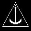

Once you have joined the server you will have no team assigned and can be attacked by anyone, so it is advisable to be on a team.
To make a team you need to send an emblem (preferably pixel art) a standard issue primary and secondary as shown and banner
